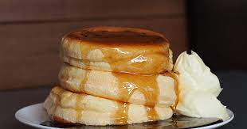

Pancakes

Look at these pancakes
Pancakes are an awesome way to start your day.
you can top them however you like and you can store any leftover mix
for future pancake endevours.
Ingredients
- All purpose flour
- Baking powder
- Sugar
- milk
- eggs
- Butter
Steps
- In a large bowl, sift together the flour, baking powder,
salt and sugar. Make a well in the center and pour in
the milk, egg and melted butter; mix until smooth.
- Heat a lightly oiled griddle or frying pan
over medium-high heat. Pour or scoop the batter
onto the griddle, using approximately 1/4 cup for
each pancake. Brown on both sides and serve hot.
Return